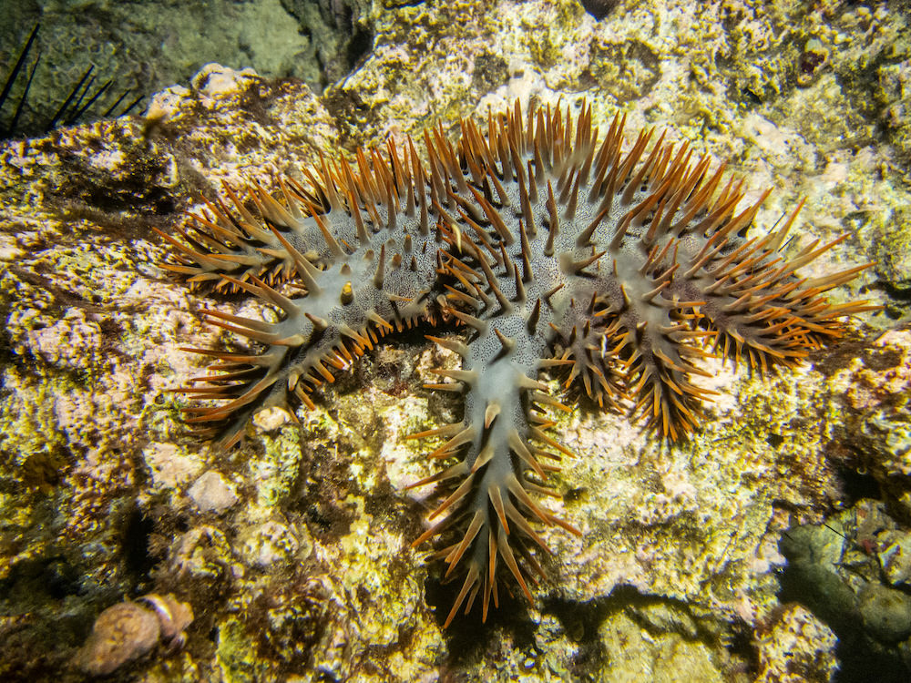
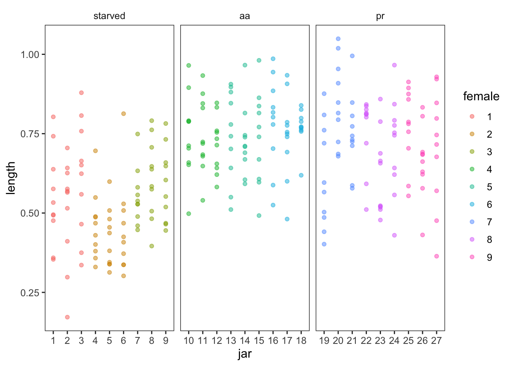
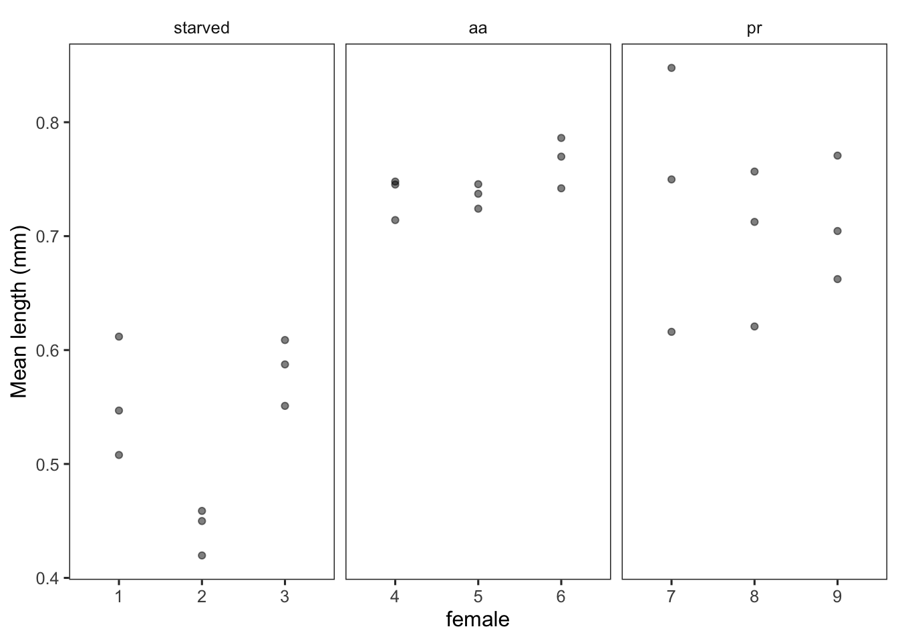

library(tidyverse)
source("R/set_ggplot_theme.R")
library(broom)
library(Rmisc)
library(car)
library(lme4)
library(lmerTest)
library(nlme)
library(VCA)
library(afex)QK Box 10.6
Caballes et al. (2016) examined the effects of maternal nutrition (three treatments: starved or fed one of two coral genera: Acropora or Porites) on the larval biology of crown-of-thorns seastars. There were three female seastars nested within each treatment, 50 larvae reared from each female were placed into each of three glass culture jars and the lengths of ten larvae from each jar after four days were measured after 4 days. This fully balanced design has maternal nutrition as a fixed factor with three random levels of nesting: females within nutrition treatment, jars within females and individual larvae within jars.

The paper is here
Caballes, C. F., Pratchett, M. S., Kerr, A. M. & Rivera-Posada, J. A. (2016). The role of maternal nutrition on oocyte size and quality, with respect to early larval development in the coral-eating starfish, Acanthaster planci. PLoS One, 11, e0158007.
Preliminaries
Packages:
Data:
caballes_length <- read_csv("data/caballes_length.csv")
caballes_length# A tibble: 270 × 4
diet female jar length
<chr> <dbl> <dbl> <dbl>
1 starved 1 1 0.638
2 starved 1 1 0.533
3 starved 1 1 0.476
4 starved 1 1 0.359
5 starved 1 1 0.354
6 starved 1 1 0.576
7 starved 1 1 0.742
8 starved 1 1 0.495
9 starved 1 1 0.803
10 starved 1 1 0.493
# ℹ 260 more rowsset_sum_contrasts()Make female and jar factors
caballes_length$female <- factor(caballes_length$female)
caballes_length$jar <- factor(caballes_length$jar)Reorder nutrition treatments so starved is first for default lm contrasts
caballes_length$diet <- factor(caballes_length$diet, levels = c("starved","aa","pr"))
levels(caballes_length$diet)[1] "starved" "aa" "pr" Visualize data
caballes_length %>%
ggplot(aes(jar, length, color = female)) +
geom_point(alpha = 0.5) +
facet_wrap(~ diet, scales = "free_x")
Run model
Note: can’t get the aov commands to work for 3 level nested design
caballes.aov <- aov(length~diet+Error(female/jar), caballes_length)Error in qr.qty(qr.e, resp): NA/NaN/Inf in foreign function call (arg 1)Fit as lm using OLS estimation
caballes.lm <- lm(length ~ diet/female/jar, caballes_length)
anova(caballes.lm)Analysis of Variance Table
Response: length
Df Sum Sq Mean Sq F value Pr(>F)
diet 2 2.5334 1.26668 72.1624 < 2.2e-16 ***
diet:female 6 0.3735 0.06224 3.5460 0.002199 **
diet:female:jar 18 0.5265 0.02925 1.6664 0.045989 *
Residuals 243 4.2654 0.01755
---
Signif. codes: 0 '***' 0.001 '**' 0.01 '*' 0.05 '.' 0.1 ' ' 1Check diagnostics and lm output (not shown):
plot(caballes.lm)
summary(caballes.lm)Get F and P values using correct denominators
#Diet F
f <- 1.26668/0.06224
pf(f, df1 = 2, df2 = 6, lower.tail = FALSE)[1] 0.002120396#Females F
f <- 0.06224/0.02925
pf(f, df1 = 6, df2 = 18, lower.tail = FALSE)[1] 0.100229#Jars F
f <- 0.02925/0.01755
pf(f, df1 = 18, df2 = 243, lower.tail = FALSE)[1] 0.04594475Variance components from VCA
caballes.vca <- anovaMM(length ~ diet/(female)/(jar), caballes_length)
caballes.vca
ANOVA-Type Estimation of Mixed Model:
--------------------------------------
[Fixed Effects]
int dietaa dietpr dietstarved
0.526911 0.218889 0.188744 0.000000
[Variance Components]
Name DF SS MS VC %Total SD
1 total 200.914152 0.019823 100 0.140793
2 diet:female 6 0.37346 0.062243 0.0011 5.547827 0.033162
3 diet:female:jar 18 0.526523 0.029251 0.00117 5.90134 0.034202
4 error 243 4.265431 0.017553 0.017553 88.550832 0.132489
CV[%]
1 21.242557
2 5.003435
3 5.160385
4 19.989554
Mean: 0.662789 (N = 270)
Experimental Design: balanced | Method: ANOVAVCAinference(caballes.vca, alpha = 0.05, VarVC = TRUE, ci.method = "satterthwaite")
Inference from Mixed Model Fit
------------------------------
> VCA Result:
-------------
[Fixed Effects]
int dietaa dietpr dietstarved
0.5269 0.2189 0.1887 0.0000
[Variance Components]
Name DF SS MS VC %Total SD CV[%] Var(VC)
1 total 200.9142 0.0198 100 0.1408 21.2426
2 diet:female 6 0.3735 0.0622 0.0011 5.5478 0.0332 5.0034 0
3 diet:female:jar 18 0.5265 0.0293 0.0012 5.9013 0.0342 5.1604 0
4 error 243 4.2654 0.0176 0.0176 88.5508 0.1325 19.9896 0
Mean: 0.6628 (N = 270)
Experimental Design: balanced | Method: ANOVA
> VC:
-----
Estimate DF CI LCL CI UCL One-Sided LCL One-Sided UCL
total 0.0198 200.9142 0.0165 0.0244 0.0169 0.0235
diet:female 0.0011 1.5701 0.0003 0.1039 0.0003 0.0427
diet:female:jar 0.0012 2.8040 0.0004 0.0188 0.0004 0.0112
error 0.0176 243.0000 0.0148 0.0211 0.0152 0.0205
> SD:
-----
Estimate DF CI LCL CI UCL One-Sided LCL One-Sided UCL
total 0.1408 200.9142 0.1283 0.1560 0.1302 0.1535
diet:female 0.0332 1.5701 0.0164 0.3223 0.0184 0.2066
diet:female:jar 0.0342 2.8040 0.0191 0.1371 0.0210 0.1058
error 0.1325 243.0000 0.1217 0.1454 0.1233 0.1432
> CV[%]:
--------
Estimate DF CI LCL CI UCL One-Sided LCL One-Sided UCL
total 21.2426 200.9142 19.3530 23.5442 19.6423 23.1536
diet:female 5.0034 1.5701 2.4710 48.6259 2.7686 31.1672
diet:female:jar 5.1604 2.8040 2.8837 20.6905 3.1612 15.9636
error 19.9896 243.0000 18.3593 21.9400 18.6100 21.6107
95% Confidence Level
Satterthwaite methodology used for computing CIs Fit mixed effects model using REML/ML
caballes.lmer <- lmer(length ~ diet + (1|female/jar), caballes_length)
summary(caballes.lmer)Linear mixed model fit by REML. t-tests use Satterthwaite's method [
lmerModLmerTest]
Formula: length ~ diet + (1 | female/jar)
Data: caballes_length
REML criterion at convergence: -289.2
Scaled residuals:
Min 1Q Median 3Q Max
-2.69014 -0.69659 0.01388 0.64143 2.59374
Random effects:
Groups Name Variance Std.Dev.
jar:female (Intercept) 0.00117 0.03420
female (Intercept) 0.00110 0.03316
Residual 0.01755 0.13249
Number of obs: 270, groups: jar:female, 27; female, 9
Fixed effects:
Estimate Std. Error df t value Pr(>|t|)
(Intercept) 0.66279 0.01518 5.99986 43.652 9.68e-09 ***
diet1 -0.13588 0.02147 5.99986 -6.328 0.000728 ***
diet2 0.08301 0.02147 5.99986 3.866 0.008306 **
---
Signif. codes: 0 '***' 0.001 '**' 0.01 '*' 0.05 '.' 0.1 ' ' 1
Correlation of Fixed Effects:
(Intr) diet1
diet1 0.000
diet2 0.000 -0.500Get F-ratio for diet test using lmerTest
anova(caballes.lmer, ddf = "Kenward-Roger")Type III Analysis of Variance Table with Kenward-Roger's method
Sum Sq Mean Sq NumDF DenDF F value Pr(>F)
diet 0.71442 0.35721 2 6 20.35 0.002121 **
---
Signif. codes: 0 '***' 0.001 '**' 0.01 '*' 0.05 '.' 0.1 ' ' 1CI on variance components (remembering to square CIs from lmer which are in SD units)
caballes.ci <- confint.merMod(caballes.lmer)
caballes.vc <- (caballes.ci)^2
print(caballes.vc) 2.5 % 97.5 %
.sig01 0.000000000 0.004051007
.sig02 0.000000000 0.003177589
.sigma 0.014769187 0.021083239
(Intercept) 0.404053917 0.475997080
diet1 0.030364676 0.009506432
diet2 0.001992217 0.014735036Simplify dataset by averaging across larvae within a jar
d <- caballes_length %>%
group_by(diet, female, jar) %>%
dplyr::summarise(mean = mean(length),
sd = sd(length),
n = n(),
se = sd / sqrt(n)) %>%
ungroup()
d %>%
ggplot(aes(female, mean)) +
geom_point(alpha = 0.5) +
facet_wrap(~ diet, scales = "free_x") +
labs(y = "Mean length (mm)")
Fit nested ANOVA with OLS
Female is nested within treatment:
d_aov <- aov(mean~diet+Error(female), d)
summary(d_aov)
Error: female
Df Sum Sq Mean Sq F value Pr(>F)
diet 2 0.25334 0.12667 20.35 0.00212 **
Residuals 6 0.03735 0.00622
---
Signif. codes: 0 '***' 0.001 '**' 0.01 '*' 0.05 '.' 0.1 ' ' 1
Error: Within
Df Sum Sq Mean Sq F value Pr(>F)
Residuals 18 0.05265 0.002925 m1 <- lm(mean ~ diet / female, d)
anova(m1)Analysis of Variance Table
Response: mean
Df Sum Sq Mean Sq F value Pr(>F)
diet 2 0.253336 0.126668 43.3035 1.323e-07 ***
diet:female 6 0.037346 0.006224 2.1279 0.1002
Residuals 18 0.052652 0.002925
---
Signif. codes: 0 '***' 0.001 '**' 0.01 '*' 0.05 '.' 0.1 ' ' 1Get F and P values using correct denominators. Note that I’m using broom:tidy to tidy the anova output, and lead() to calculate the new_F and new_P. This avoids extracting statistic (F-value) and df into new objects, or hard-coding the calculations.
tidy(anova(m1)) %>%
mutate(new_F = meansq / lead(meansq),
new_P = pf(new_F, df1 = df, df2 = lead(df), lower.tail = FALSE)) %>%
kable(digits = 3)| term | df | sumsq | meansq | statistic | p.value | new_F | new_P |
|---|---|---|---|---|---|---|---|
| diet | 2 | 0.253 | 0.127 | 43.303 | 0.0 | 20.351 | 0.002 |
| diet:female | 6 | 0.037 | 0.006 | 2.128 | 0.1 | 2.128 | 0.100 |
| Residuals | 18 | 0.053 | 0.003 | NA | NA | NA | NA |
Fit mixed effects model using REML/ML
m2 <- lmer(mean ~ diet + (1|female), d)
summary(m2)Linear mixed model fit by REML. t-tests use Satterthwaite's method [
lmerModLmerTest]
Formula: mean ~ diet + (1 | female)
Data: d
REML criterion at convergence: -60.8
Scaled residuals:
Min 1Q Median 3Q Max
-2.05994 -0.46141 0.08908 0.48149 2.22410
Random effects:
Groups Name Variance Std.Dev.
female (Intercept) 0.001100 0.03316
Residual 0.002925 0.05408
Number of obs: 27, groups: female, 9
Fixed effects:
Estimate Std. Error df t value Pr(>|t|)
(Intercept) 0.52691 0.02630 6.00000 20.036 1e-06 ***
dietaa 0.21889 0.03719 6.00000 5.886 0.00107 **
dietpr 0.18874 0.03719 6.00000 5.075 0.00228 **
---
Signif. codes: 0 '***' 0.001 '**' 0.01 '*' 0.05 '.' 0.1 ' ' 1
Correlation of Fixed Effects:
(Intr) dietaa
dietaa -0.707
dietpr -0.707 0.500anova(m2, ddf = "Kenward-Roger")Type III Analysis of Variance Table with Kenward-Roger's method
Sum Sq Mean Sq NumDF DenDF F value Pr(>F)
diet 0.11906 0.059528 2 6 20.35 0.002121 **
---
Signif. codes: 0 '***' 0.001 '**' 0.01 '*' 0.05 '.' 0.1 ' ' 1